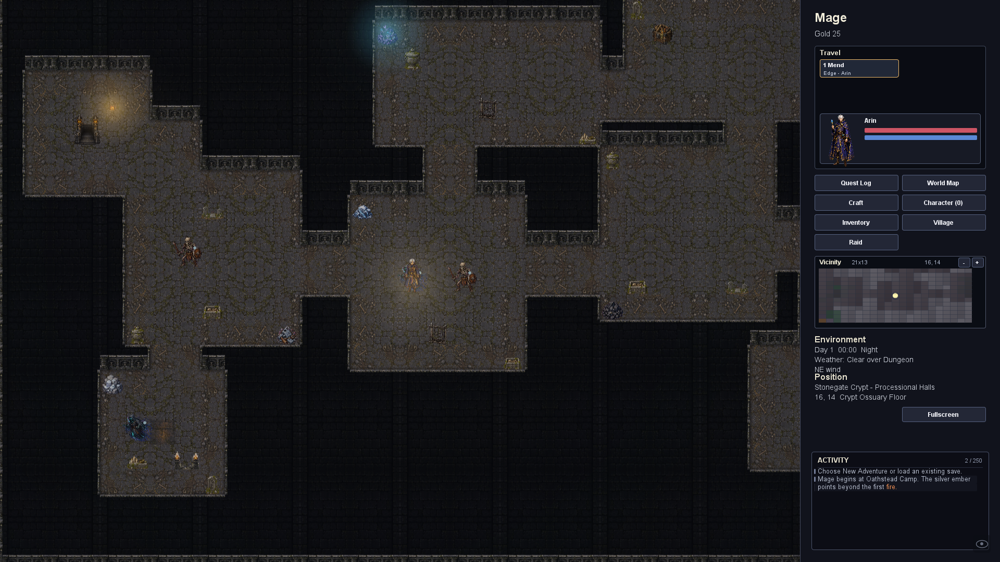
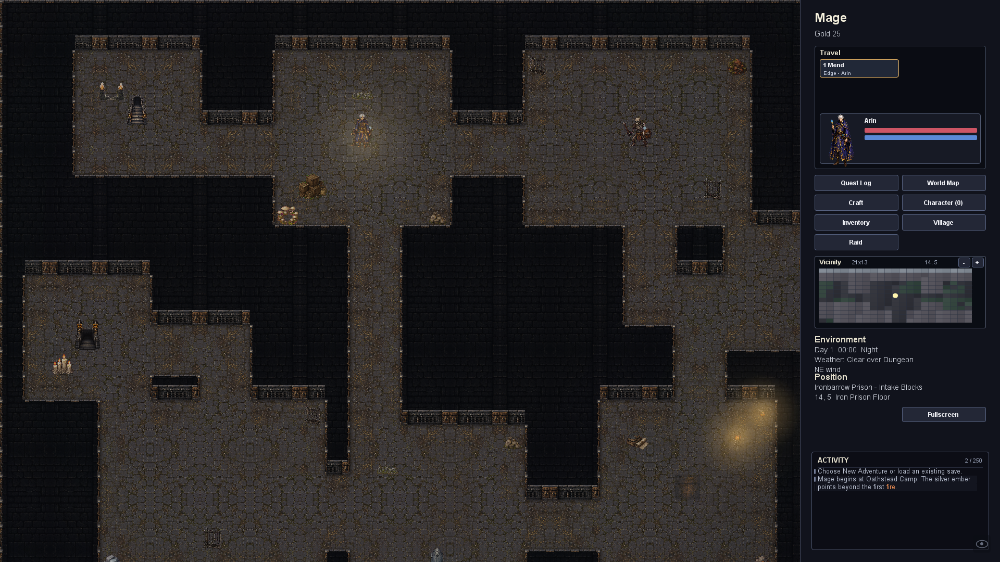
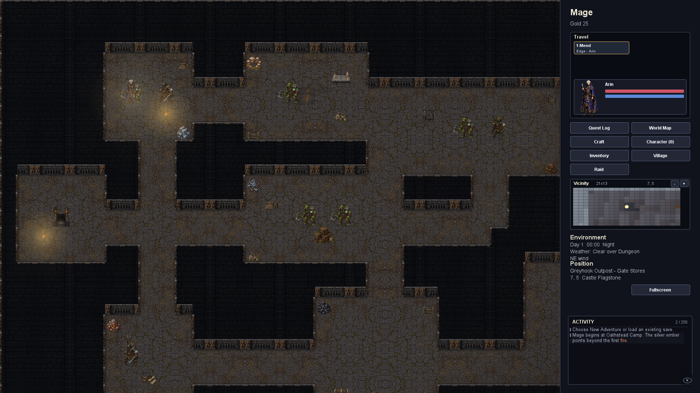
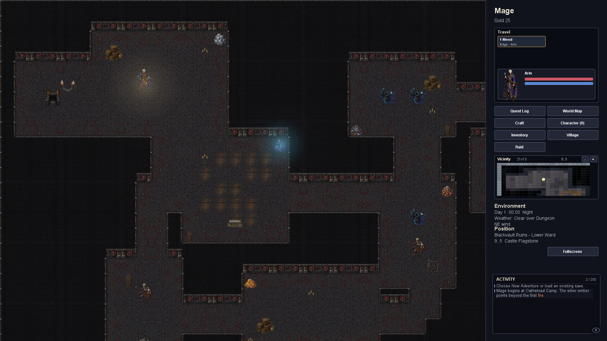
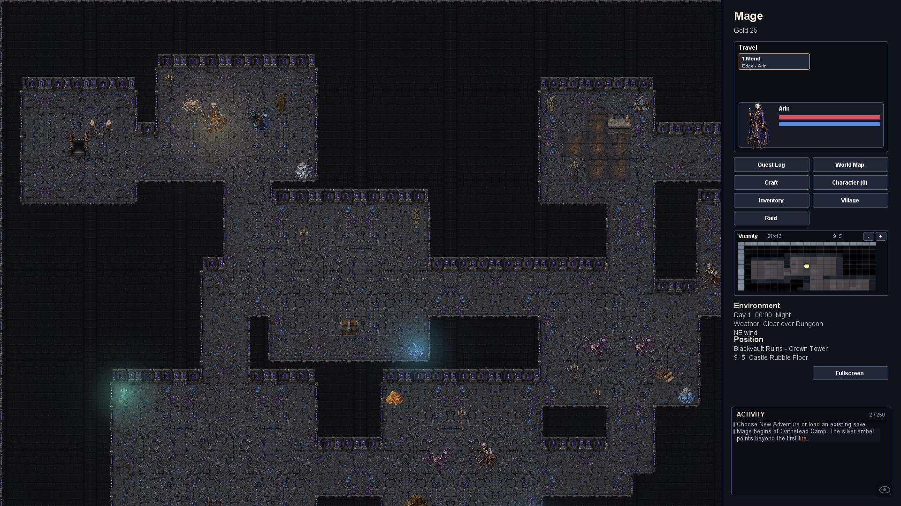
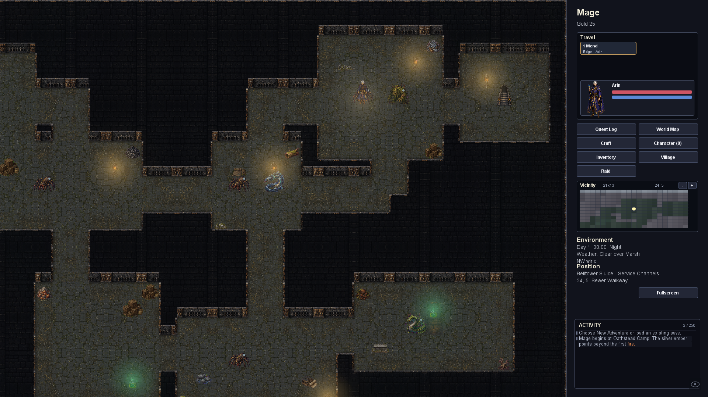

Normal-zoom captures from the game renderer. Finer masonry, themed room dressing, six harvestable deposits per floor, and a modest increase in room activity. Resources and additional props avoid routes, stairs and encounter positions.





